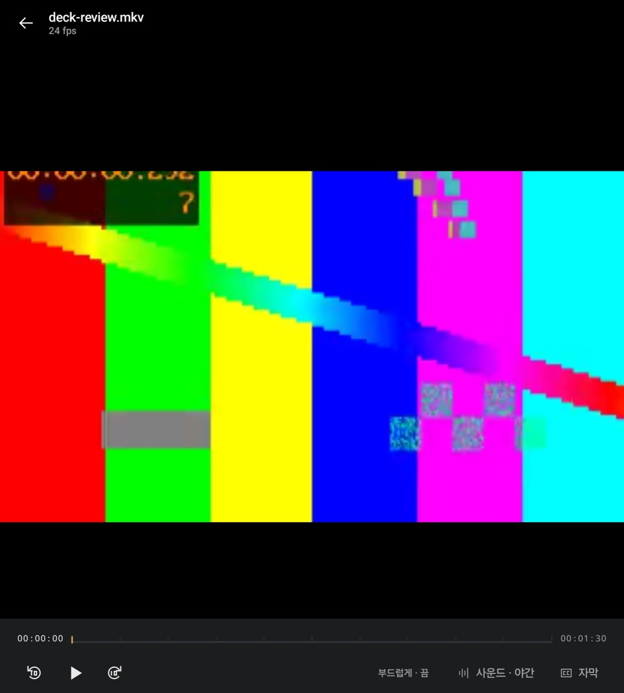
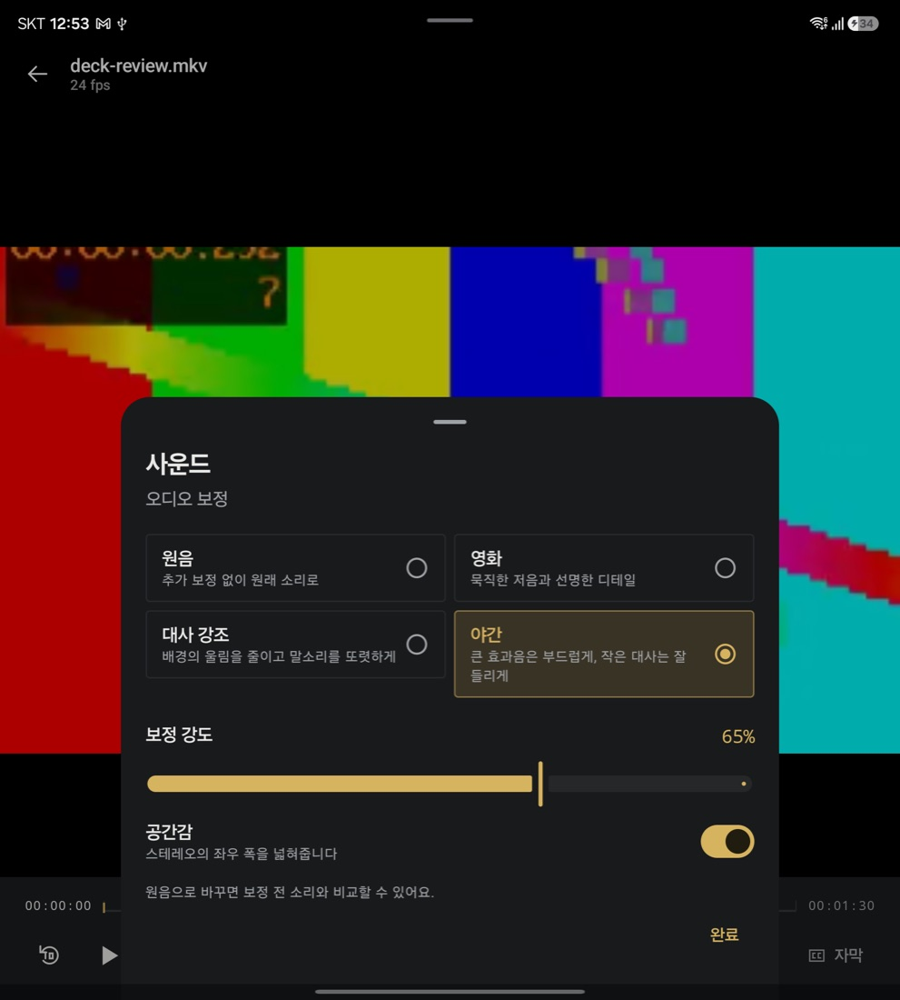

자연스러운 움직임
프레임 사이의 움직임을 보완하는 부드럽게 모드. 영상과 기기에 맞게 선택해 시청할 수 있습니다.
화면의 움직임부터 선명도와 사운드까지.
나만의 영상에 집중할 수 있도록, 스무스플레이어가 시청의 감각을 다듬습니다.

좋아하는 장면에 어울리는 재생 환경을 직접 선택해 보세요.
프레임 사이의 움직임을 보완하는 부드럽게 모드. 영상과 기기에 맞게 선택해 시청할 수 있습니다.
자연스러운 확대와 선명도 보정으로 화면을 다듬고, 뭉개져 보이는 부분을 완화해 보세요.
원음, 영화, 대사 강조, 야간 모드. 보고 있는 영상과 주변 환경에 맞춰 소리를 조절합니다.
영상에 맞는 자막을 선택하고 크기와 싱크를 조절해 나에게 편한 시청 환경을 만듭니다.
기기의 영상과 연결한 네트워크 저장소의 영상을 탐색하고 보던 위치부터 이어 볼 수 있습니다.
원본 비율부터 화면 채우기까지, 사용하는 기기와 콘텐츠에 어울리는 화면 구성을 선택합니다.
장면마다 듣고 싶은 소리는 다릅니다. 영화의 분위기를 살리거나 대사에 집중하고, 늦은 밤에는 소리를 차분하게 조절하세요. 화면 속 사운드 패널은 실제 앱의 테스트 화면입니다.

기기의 파일 또는 연결한 저장소에서 보고 싶은 영상을 선택합니다.
화질, 사운드, 자막 등 필요한 설정을 시청 환경에 맞게 조절합니다.
영상에 집중하고, 다음에는 보던 장면부터 이어서 감상하세요.
일부 기능의 사용 가능 여부와 효과는 기기 성능, 운영체제, 영상 형식 및 앱 버전에 따라 다를 수 있습니다. 부드럽게 모드는 지원 조건과 이용 권한이 적용될 수 있습니다. 화질 보정은 원본에 없는 디테일의 정확한 복원을 보장하지 않습니다.
스무스플레이어와 함께 좋아하는 영상에 더 오래 머무르세요.
처음으로 ↑